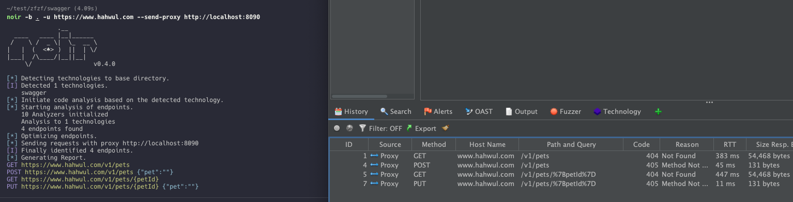
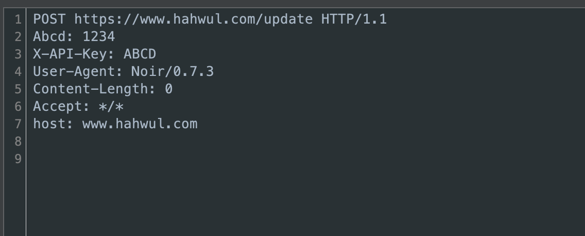
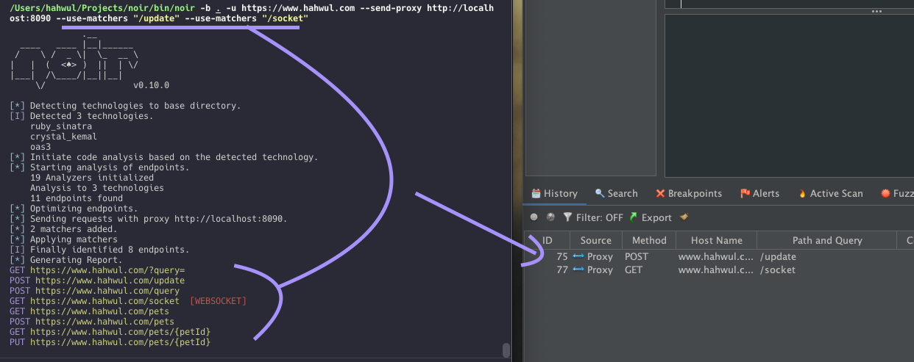

다른 도구로 결과 전송하기
발견된 엔드포인트를 Burp Suite, ZAP, Elasticsearch 같은 보안 도구로 직접 전송하여 추가 분석에 활용할 수 있습니다.
사용법
관련 플래그는 아래와 같습니다.
--send-req— 웹 요청으로 전송--send-proxy http://proxy...— HTTP 프록시를 통해 전송--send-es http://es...— Elasticsearch로 전송--with-headers X-Header:Value— 사용자 정의 헤더 추가--use-matchers string— 일치하는 엔드포인트만 전송 (URL, 메서드, 또는 메서드:URL)--use-filters string— 일치하는 엔드포인트 제외 (URL, 메서드, 또는 메서드:URL)
프록시로 전송
Burp Suite나 ZAP 같은 프록시로 모든 엔드포인트를 보냅니다.
noir -b ./source --send-proxy http://localhost:8080

사용자 정의 헤더 추가
인증 토큰 등 커스텀 헤더를 함께 보낼 수 있습니다.
noir -b ./source --send-proxy http://localhost:8080 --with-headers "Authorization: Bearer your-token"

필터링 및 매칭
매처와 필터를 사용하면 원하는 엔드포인트만 골라서 전송할 수 있습니다.
URL 기반 필터링
"api"를 포함하는 엔드포인트만 보냅니다.
noir -b ./source --send-proxy http://localhost:8080 --use-matchers "api"
메서드 기반 필터링
GET 요청만 보냅니다.
noir -b ./source --send-proxy http://localhost:8080 --use-matchers "GET"
POST 요청을 제외합니다.
noir -b ./source --send-proxy http://localhost:8080 --use-filters "POST"
메서드와 URL 조합
API 엔드포인트에 대한 POST 요청만 보냅니다.
noir -b ./source --send-proxy http://localhost:8080 --use-matchers "POST:/api"
관리자 페이지에 대한 GET 요청을 제외합니다.
noir -b ./source --send-proxy http://localhost:8080 --use-filters "GET:/admin"
지원되는 HTTP 메서드
GET, POST, PUT, DELETE, PATCH, HEAD, OPTIONS, TRACE, CONNECT (대소문자 구분 안함)
다중 패턴
여러 매처나 필터를 동시에 사용할 수 있습니다.
noir -b ./source --send-proxy http://localhost:8080 --use-matchers "GET" --use-matchers "POST:/api"
